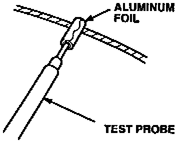
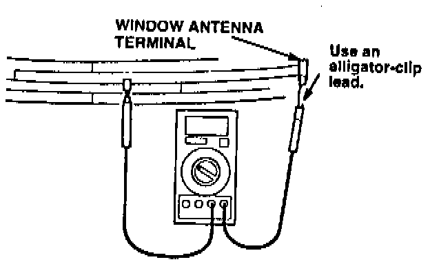

Diagnosis 3. Window Antenna Test

1. Wrap aluminum foil around the end of one of the volt-ohmmeter test probes as shown. The aluminum foil keeps the test probe from damaging the antenna grids during the test.

2. Attach the other test probe with an alligator-clip lead onto the window antenna terminal (where the antenna lead contacts the window).
3. Lift and move the test probe with the aluminum foil to touch the ends of each of the antenna grid lines on the window.
If the resistance is less than 1 ohm between each of the grid lines and the terminal go to Window Antenna Coaxial Cable Test.
If the resistance is more than 1 ohm between any part of the grid lines and the terminal, go to CORRECTIVE ACTION, Window Antenna Repair.